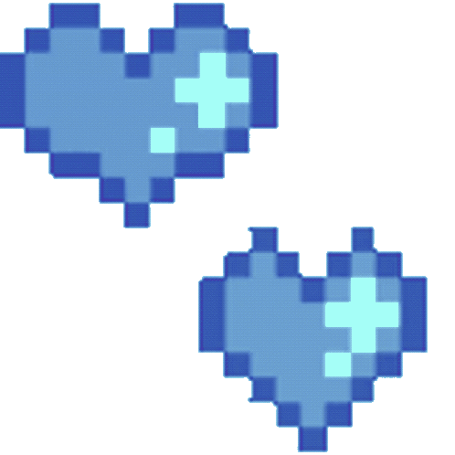

to sof

don't really know how to open this, but I wanted to write this out of my appreciation for you being in my life
getting to talk and getting to know you has been such a wonderful experience. You're funny, thoughtful, and a really cool person to be around. From the big conversations to the small ones, they've made everyday feel a little less heavier.
I also want you to know how much I admire your determination. College isn't something easy, but I think it's wonderful that you keep on showing up despite how you feel at times. You're working towards your goals, and the future you want for yourself.
I hope you give yourself credit for how far you've already come. And beyond all your accomplishments, I hope that you know that simply being yourself is more than enough to make you someone worth appreciating.
I'm glad we've crossed paths, and I'm looking forward to all the little memories we have yet to make.
with lots of appreciation,
david ♡